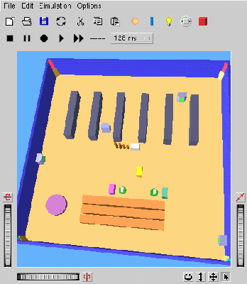

A Webots kontroller felépítése
A verseny
1. Artificial Life Creators Contest Online a Webots-szal
Két fogyó energiájú robot keresi az energiaforrásokat
Lassuló utántöltõdés
Tárgyakkal teli, 2 négyzetméteres, változó szobában
Mzperx
